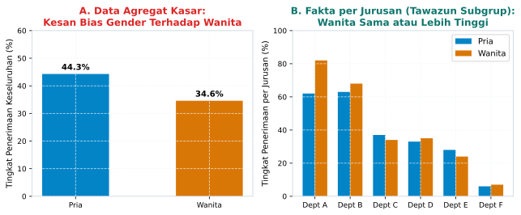

4 Amanah dan Tawazun: Etika Keseimbangan
“Dan langit telah ditinggikan-Nya dan Dia ciptakan keseimbangan (tawazun), agar kamu jangan merusak keseimbangan itu. Dan tegakkanlah timbangan itu dengan adil dan janganlah kamu mengurangi neraca itu.” (QS. Ar-Rahman: 7-9)
4.1 Jebakan Angka Tunggal di Meja Rapat
Sebuah situasi menegangkan terjadi di ruang sidang pimpinan sebuah institusi pendidikan tinggi: sebuah laporan evaluasi program beasiswa baru saja dipaparkan di layar proyektor. Angka agregat di halaman depan menunjukkan kesimpulan yang mengejutkan: tingkat kelulusan tepat waktu mahasiswa penerima beasiswa jalur prestasi akademik tercatat sebesar 72%, sementara mahasiswa jalur reguler non-beasiswa mencatatkan tingkat kelulusan 81%.
Melihat angka tunggal tersebut, beberapa anggota dewan pengawas langsung bereaksi keras. “Ini bukti bahwa program beasiswa kita tidak efektif!” seru salah seorang pimpinan. “Bagaimana mungkin mahasiswa terpilih yang dibiayai penuh justru memiliki tingkat kelulusan sembilan persen lebih rendah dibandingkan mahasiswa reguler yang membayar sendiri? Batalkan saja program ini untuk tahun depan!”
Ruangan mendadak riuh. Kesimpulan ditarik dengan kilat, vonis dijatuhkan seketika, dan anggaran pembinaan generasi muda terancam dipangkas habis. Semua kepanikan itu terjadi hanya karena para pengambil kebijakan terpaku pada satu angka ringkasan gabungan (aggregate summary).
Beruntung, seorang dosen statistika muda yang hadir dalam rapat tersebut meminta waktu untuk berbicara. Ia membuka berkas laporan lebih dalam dan menampilkan tabulasi data yang dipecah berdasarkan fakultas. Sebuah kenyataan yang berbalik seratus delapan puluh derajat seketika tersingkap di layar.
Di Fakultas Kedokteran dan Teknik yang memiliki kurikulum sangat berat, mahasiswa penerima beasiswa mencatatkan tingkat kelulusan 65%, sedangkan mahasiswa reguler hanya 58%. Di Fakultas Ekonomi dan Ilmu Komunikasi, mahasiswa beasiswa lulus 88%, sedangkan mahasiswa reguler 82%. Di Fakultas Sastra dan Humaniora, mahasiswa beasiswa lulus 92%, sedangkan mahasiswa reguler 89%.
Di setiap fakultas tanpa kecuali, mahasiswa penerima beasiswa mencatatkan performa kelulusan yang lebih unggul dibandingkan mahasiswa reguler. Lalu, mengapa ketika seluruh data digabungkan ke dalam satu tabel nasional, mahasiswa beasiswa tampak tertinggal jauh?
Jawabannya terletak pada distribusi sebaran pilihan studi: mayoritas mahasiswa penerima beasiswa ditempatkan pada program studi sains murni dan teknik yang secara umum memang memiliki tingkat kelulusan lebih ketat di seluruh dunia. Sebaliknya, mayoritas mahasiswa reguler terkonsentrasi pada program studi sosial dengan tingkat kelulusan yang relatif lebih longgar.
Penggabungan data kasar tanpa menimbang bobot subkelompok telah menciptakan ilusi yang membalikkan fakta lapangan. Fenomena mengejutkan di mana sebuah tren berbalik arah ketika data dipecah ke dalam kategori-kategori penyusunnya dikenal luas dalam dunia sains sebagai Paradoks Simpson (Simpson’s Paradox).
4.2 Anatomi Sejarah, Membedah Kasus Klasik UC Berkeley
Untuk memahami mengapa fenomena ini begitu mengguncang dunia keilmuan modern, kita perlu menengok salah satu kasus investigasi data paling terkenal dalam sejarah: penerimaan mahasiswa pascasarjana di University of California, Berkeley, pada musim gugur tahun 1973 (Bickel et al. 1975).
Pada tahun tersebut, pimpinan kampus UC Berkeley dikejutkan oleh ancaman tuntutan hukum federal atas dugaan diskriminasi gender. Angka statistik penerimaan mahasiswa baru tingkat universitas menunjukkan disparitas yang sangat mencolok dan tampak tak terbantahkan: dari sekitar 8.442 pelamar pria, sebanyak 44% berhasil diterima. Sementara itu, dari sekitar 4.321 pelamar wanita, hanya 35% yang dinyatakan lolos seleksi.
Selisih sebesar sembilan persen di tingkat universitas memicu kecaman publik dan gelombang protes mahasiswa. Secara kasat mata pada data agregat, tuduhan bahwa kampus bersikap seksis dan bias terhadap wanita tampak sangat benderang dan memiliki bukti kuantitatif yang kokoh.
Khawatir akan ancaman sanksi hukum dan rusaknya reputasi universitas, pihak dekanat meminta seorang profesor statistika ternama bernama Peter Bickel bersama timnya untuk melakukan audit data menyeluruh. Bickel tidak puas hanya dengan melihat angka ringkasan di permukaan. Ia memutuskan untuk membedah data pelamar ke dalam masing-masing departemen program studi individual (Jurusan A hingga F).
Hasil temuan Bickel dan timnya, yang kemudian diterbitkan dalam jurnal bergengsi Science pada tahun 1975, mengejutkan para pengamat hukum dan ilmuwan di seluruh dunia.

Sebagaimana dipetakan secara visual pada Figure 4.1, perbandingan antara Panel A dan Panel B memperlihatkan keajaiban matematis yang luar biasa:
Pada Panel A (Data Agregat Kasar), pelamar pria tampak unggul jauh di atas pelamar wanita (\(44{,}3\%\) berbanding \(34{,}6\%\)). Namun, perhatikan apa yang terjadi pada Panel B ketika data dipecah ke dalam enam departemen terbesar: - Pada Departemen A, tingkat penerimaan wanita mencapai \(82\%\), jauh melampaui pria yang hanya \(62\%\). - Pada Departemen B, tingkat penerimaan wanita \(68\%\), mengungguli pria yang berada di angka \(63\%\). - Pada Departemen C, D, dan F, tingkat penerimaan pria dan wanita relatif seimbang, bahkan di sebagian jurusan wanita mencatatkan persentase kelulusan sedikit lebih tinggi.
Dari seluruh enam departemen yang diaudit, pola agregat yang tampak bias berubah secara substantif setelah data diuraikan per departemen: data agregat saja tidak cukup untuk menyimpulkan bahwa perbedaan tersebut berasal dari perlakuan diskriminatif pada tingkat departemen. Pada sebagian besar jurusan yang diaudit, peluang pelamar wanita yang mendaftar justru setara atau lebih tinggi.
Lantas, bagaimana mungkin angka gabungan universitas memperlihatkan hasil yang seolah mendiskriminasi wanita secara telak?
4.2.1 Intuisi Neraca: Mengapa Rata-rata Gabungan Menipu
Bayangkan sebuah neraca timbangan raksasa dengan dua piringan. Di piringan kiri bertumpuk ribuan pemohon jurusan teknik yang kursinya melimpah, di piringan kanan bertumpuk ribuan pemohon humaniora yang kursinya sempit. Jarum timbangan gabungan miring bukan karena panitia menekan salah satu sisi, melainkan karena beban pendaftar menumpuk pada sisi yang kursinya paling sedikit.
Cara paling jujur membaca situasi ini adalah membedah tabel kontingensi: pisahkan penerimaan per departemen, bandingkan pria dan wanita di dalam departemen yang sama, lalu timbang dengan jumlah kursi yang tersedia. Ketika dekomposisi ini dilakukan, ilusi bias pada angka gabungan lenyap dan fakta per departemen berbicara apa adanya.
4.2.2 Menyingkap Variabel Perancu (Confounding Variable)
Penyebab utama dari anomali matematis ini adalah keberadaan variabel ketiga yang tersembunyi, yang dalam metodologi penelitian disebut sebagai variabel perancu (confounding variable). Dalam kasus UC Berkeley, variabel perancu tersebut adalah perbedaan kecenderungan pemilihan jurusan antara pelamar pria dan wanita.
Data lapangan menunjukkan bahwa pelamar wanita mayoritas mendaftar pada departemen-departemen humaniora, ilmu sosial, dan bahasa (seperti Departemen E dan F). Departemen-departemen ini memiliki kapasitas kursi yang sangat sedikit dan rasio pendaftar yang membludak, sehingga tingkat penerimaan umumnya memang sangat ketat bagi siapa pun (hanya sekitar 6% hingga 24% dari total pelamar yang dapat diterima).
Sebaliknya, pelamar pria mayoritas mendaftar pada departemen teknik, sains terapan, dan kimia (seperti Departemen A dan B). Departemen-departemen ini memiliki pendanaan riset yang melimpah dan daya tampung mahasiswa yang sangat besar, sehingga tingkat penerimaan umumnya mencapai di atas 60%.
Dengan kata lain: - Wanita bersaing sangat ketat di jurusan yang kuotanya sempit, meskipun performa individu mereka di jurusan tersebut sangat cemerlang. - Pria melamar di jurusan yang pintunya terbuka lebar, sehingga persentase kelulusan mereka terangkat naik secara otomatis.
Ketika angka penerimaan dari kedua kelompok jurusan yang memiliki karakteristik daya tampung berbeda ini dilebur dan dirata-ratakan secara sembrono ke dalam satu angka agregat tunggal, terciptalah ilusi statistik yang memutarbalikkan fakta. Menyimpulkan bahwa universitas mendiskriminasi wanita adalah kekeliruan analisis yang fatal akibat mengabaikan konteks struktur subkelompok. Ketidakadilan sejati bukanlah terletak pada panitia seleksi universitas, melainkan pada ketimpangan struktural sosial yang menyebabkan wanita pada masa itu kurang terfasilitasi untuk mengakses pendidikan sains dan teknologi sejak jenjang pendidikan dasar dan menengah.
4.3 Menghidupkan Nilai Tawazun dan Amanah dalam Analitik
Pelajaran dari Paradoks Simpson memberikan renungan etis dan filosofis yang sangat mendalam bagi para ilmuwan, pendidik, profesional bisnis, hingga masyarakat awam. Di era informasi modern, data tidak cukup hanya dikumpulkan secara jujur; data harus ditimbang dengan timbangan yang seimbang dan proporsional.
Di sinilah dua nilai universal yang dijunjung tinggi dalam peradaban manusia dan ajaran Islam menemukan relevansi praktisnya:
4.3.1 Prinsip Tawazun (Proporsionalitas dan Keseimbangan Konteks)
Kata tawazun berasal dari akar kata timbangan (al-mizan). Dalam Al-Quran surat Ar-Rahman ayat 7 hingga 9, Allah menegaskan bahwa alam semesta ditegakkan di atas pilar keseimbangan, dan manusia diperintahkan untuk menegakkan timbangan tersebut dengan adil tanpa menguranginya.
Dalam analitik data, bersikap tawazun berarti menolak segala bentuk penyederhanaan yang gegabah (oversimplification). Seorang analis yang berjiwa tawazun tidak akan pernah puas hanya dengan menyajikan angka rata-rata tunggal nasional atau angka pertumbuhan gabungan perusahaan. Ia selalu menimbang konteks: - Apakah subkelompok yang dibandingkan memiliki bobot awal yang setara? - Apakah ada faktor lingkungan, demografi, atau kapasitas yang membedakan kinerja masing-masing unit? - Apakah generalisasi data agregat berisiko menzalimi kelompok minoritas yang sesungguhnya telah berjuang keras di bidangnya masing-masing?
Tawazun menuntut kita untuk selalu memeriksa rincian lapisan data secara seimbang sebelum menjatuhkan vonis kebijakan.
4.3.2 Prinsip Amanah (Integritas Representasi dan Pencegahan Framing Jahat)
Prinsip Amanah menuntut kejujuran intelektual mutlak. Di dunia korporat, pemasaran politik, dan advokasi sosial modern, Paradoks Simpson kerap dieksploitasi secara sengaja oleh konsultan komunikasi yang tidak bertanggung jawab.
Sebuah perusahaan yang ingin menutupi penurunan upah buruh dapat menggabungkan data gaji manajer eksekutif ke dalam tabel upah umum, sehingga angka rata-rata pendapatan karyawan tampak meningkat. Sebaliknya, seorang politisi yang ingin menjatuhkan program layanan kesehatan pemerintah dapat sengaja menyembunyikan data subkelompok lansia untuk memperlihatkan bahwa angka kematian di rumah sakit rujukan seolah meningkat.
Menyembunyikan variabel perancu yang relevan demi memaksakan sebuah narasi adalah bentuk pengkhianatan terhadap amanah keilmuan. Amanah menuntut penyaji data untuk membuka informasi secara utuh, transparan, dan tidak menyembunyikan variabel kontekstual yang berpotensi membalikkan kesimpulan publik.
4.4 Praksis Sehari-hari, Membongkar Paradoks di Lingkungan Kita
Bagaimana kita menerapkan nalar tawazun dan kewaspadaan terhadap Paradoks Simpson dalam rutinitas keseharian di tempat kerja, sekolah, maupun kehidupan bermasyarakat? Mari kita bedah tiga ranah penerapan konkret:
4.4.1 Evaluasi Kinerja Karyawan dan Guru
Di sebuah perusahaan multinasional atau yayasan pendidikan swasta, manajemen kerap membandingkan kinerja penjualan antardivisi atau tingkat kelulusan ujian antarsekolah. Divisi A yang beroperasi di kota metropolitan dengan daya beli tinggi sering kali mencatatkan angka penjualan rata-rata lebih tinggi dibandingkan Divisi B yang beroperasi di kota kecil.
Seorang manajer yang bijak dan berkeadilan tidak akan langsung memberi bonus kepada Divisi A dan menghukum Divisi B. Ia akan memeriksa pangsa pasar lokal: bisa jadi Divisi B sesungguhnya berhasil merebut 80% pasar di kotanya (performa luar biasa), sementara Divisi A hanya merebut 20% pasar di kotanya meskipun nilai nominalnya besar. Menilai keberhasilan tanpa menimbang skala kapasitas lokal adalah kezaliman manajerial.
4.4.2 Membaca Berita Kesehatan dan Uji Klinis Obat
Di era pandemi atau pengujian vaksin baru, media massa sering memberitakan perbandingan angka kematian antara pasien yang divaksinasi dan yang tidak divaksinasi. Ada momen ketika angka mentah rumah sakit memperlihatkan bahwa jumlah pasien meninggal yang sudah divaksinasi tampak lebih banyak daripada yang belum divaksinasi.
Bagi mereka yang buta terhadap Paradoks Simpson, angka ini segera dijadikan amunisi untuk menyebarkan teori konspirasi bahwa vaksin tidak berguna. Namun, ketika data tersebut dibedah berdasarkan kelompok usia, fakta sejati tersingkap: kelompok lansia di atas usia tujuh puluh tahun yang memiliki komorbid memang memiliki risiko kematian alami yang jauh lebih tinggi, dan hampir seluruh lansia tersebut telah divaksinasi sebagai kelompok prioritas. Di setiap kelompok umur yang sama, vaksinasi terbukti memangkas risiko kematian hingga lebih dari sembilan puluh persen. Mengabaikan variabel usia adalah kesalahan fatal yang membahayakan keselamatan kesehatan masyarakat.
4.4.3 Pengambilan Keputusan Berbasis Generative AI
Di era kecerdasan buatan, banyak platform analisis data otomatis (Automated Business Intelligence) yang merangkum data perusahaan secara instan menggunakan algoritma pembelajaran mesin. Ketika prompt dimasukkan: “Bandingkan kepuasan pelanggan cabang timur dan cabang barat”, sistem AI sering kali hanya menyajikan ringkasan rata-rata tunggal tanpa memverifikasi apakah ada fenomena Paradoks Simpson di tingkat kategori produk.
Sebagai manusia yang memegang kendali nalar dan nurani, kita tidak boleh menelan ringkasan otomatis mesin tersebut secara mentah-mentah. Kita wajib menginstruksikan sistem AI secara eksplisit: “Ujilah apakah ada bias agregasi atau Paradoks Simpson dengan menampilkan tabulasi silang berdasarkan kategori ukuran transaksi dan jenis pelanggan.” Dengan cara ini, kita menjadikan kecerdasan buatan sebagai mitra analitik yang patuh pada prinsip kehati-hatian, bukan penentu tunggal yang menyesatkan arah kebijakan institusi. Kemampuan mengarahkan mesin untuk membongkar variabel perancu adalah keterampilan kepemimpinan data yang sangat vital di abad modern.